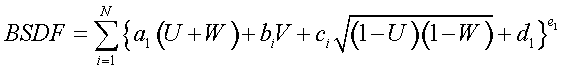

Creates a scatter model based on the combination of the Phong and Harvey models.
Syntax (isotropic)
Syntax 1 (polynomial coefficients):
NONLINEAR a1 b1 c1 d1 e1 [ a2' b2' c2' d2' e2' [ a3" b3" c3" d3" e3" ...] ] ] [ PLOT [ a a' ...] ]
Syntax 2 (anisotropic)
NONLINEAR X p q a b c d e [ p' q' a' b' c' d' e' ... ] ]
Y
Z
:
Syntax 3 (fitting BSDF values)
NONLINEAR FIT [ n ] [ options ]
FRAC e e' ...
data…
:
| Option | Description |
|---|
| a b c d e ... | BSDF equation coefficients |
| PLOT | plots the model in log(b-bo) and angle space |
| a a' ... | user-defined degree specular angles |
| FIT | FIT the BSDF values to the model |
| n (or optionally e e' ...) | n is the number of 5-parameter terms (default 5); the e's are the starting guesses for the exponents of each term |
| FRAC | fractional error |
| ANGLES | specifies spherical angle coordinates |
| LOG | specifies common logarithmic BSDF values |
Remarks
The following remarks apply to both isotropic and anisotropic versions unless otherwise
noted.
- Generalizes the combination of the Harvey
(sharp peak) and Phong (broad peak) models and as such is applicable to both smooth
and rough surfaces.
-
Isotropic: The command is defined by the following relatively simple formula:

where from the previous definition of the isotropic-surface direction
cosine variables:
where
- Anisotropic: The command assumes the
surface anisotropy is aligned with the local Alpha or Beta direction and is defined
by the following relatively simple formula:
where
from the previous definition of the anisotropic-surface direction cosine variables:
where F = Scatter angle from normal
where
= Specular
from normal
- If the quantity in braces {} is less than
zero, then the term is set to zero.
- The e exponent do not
have to be integer or positive.
- Note that the resulting BSDF is guaranteed
to have all the correct positivity, symmetry, and reciprocity properties.
- Scattering from anisotropic surfaces is not
rotationally symmetric at normal incidence and not necessarily symmetric about the
plane of incidence otherwise. Therefore, the orientation of the model on the surface
is important and is generally specified by an axis for the second command entry. For
syntax information, see the command argument,MODEL.
-
Isotropic: The total number of parameters must be less than or equal to 285,
that is, N less than or equal to 57 quintuples (five or less
terms is usually sufficient for most surfaces). The specific cases of this model
are:
| Forward Harvey | a1>>1 | b1=-2a1 | c1=0 | d1>0 | e1<0 |
| Retro Harvey | a1>>1 | b1=2a1 | c1=0 | d1>>0 | e1<0 |
| Lambertian | a1=0 | b1=0 | c1=0 | d1>0 | e1=1 |
| Forward Phong | a1=0 | b1=c1 | c1>0 | d1=0 | e1>1 |
| Retro Phong | a1=0 | b1= -c1 | c1>0 | d1=0 | e1>1 |
-
Anisotropic: The total number of parameters must be less than or equal to 40
terms (five or less terms are usually sufficient for most surfaces).
Note: When the
ps equal the qs and the as equal the
bs for each term, this model reduces to the
isotropic-surface version.
- Isotropic: The user can optionally fit BSDF
values to the above model by using the NONLINEAR
FIT command where n is the number of five-parameter terms
(default 3) or optionally the es are the starting guesses for the exponents of each
term.
-
Anisotropic: The user can optionally fit BSDF values to the above model by
entering the data on successive commands:
NONLINEAR FIT [ n ] [ options ... ]
FRAC e e' ...
data ...
:
- Anisotropic: n is
the number of 7-parameter terms (default 5) or optionally the e's
are the starting guesses for the exponents of each term. If the given data does not
cover most of the input and output hemispheres, then the fitted model can do
unexpected things in the missing regions; for example, have a TIS greater than one.
- Since the NONLINEAR
model is not defined in logarithm space (like the POLYNOMIAL
model), the FIT may have a tough time accurately reproducing any BSDF with a
high dynamic range. Optionally, the FRACtional error at each data
point can be used instead of the absolute error. This has about the same effect as
fitting in logarithm space. In either case, the fit is done using an iterative
non-linear damped least-squares algorithm. Therefore, it converges to one of the
local minima and not necessarily the best one. An off-line, time-consuming, global
optimization technique (for example, simulated annealing) could be used if the data
only needs to be fit once.
- The PLOT option plots
the model (common base 10 logarithm of the BSDF) for up to seven specular angles in
ascending order (default 0, 15, 30, 45, 60, 75, 89.9 degrees). The current PIXELS
setting controls the resolution of these plots in direction cosine space, and it
creates a distribution file name_angle.dis for each of these angles.
- The command argument, MINMAX may be used to set the minimum and maximum values of the BSDF for
this specific model.
NONLINEAR Examples